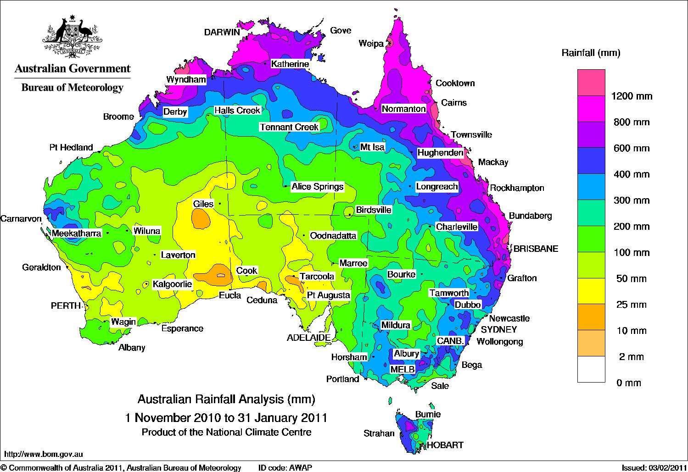

Rainfall
Predictor
"The sun after the rain is much more beautiful than the sun before the rain”
Predit Here"The sun after the rain is much more beautiful than the sun before the rain”
Predit HereRainfall Predictor is a web app which has a Machine Learning model running at the back. The purpose of developing this app is to predict whether it will rain the next day or not. This model is based on the Rain Prediction in Australia dataset. More than 80% of Australia has an annual rainfall of less than 600 mm which is less among the all continents other than Antartica which recieves less rainfall. A place inland near Lake Eyre would only receive 81 mm of rain annually. The average annual rainfall in the Australian desert is low, ranging from 81 to 250 mm. Thunderstorms are relatively common in the region, with an annual average of 15 to 20 thunderstorms. The southern parts of Australia get the usual westerly winds and rain-bearing cold fronts that come when high–pressure systems move towards northern Australia during winter. Cold snaps may bring frosts inland, though temperatures near the coast are mild or near mild all year round. Summers in southern Australia are generally dry and hot with coastal sea breezes. During a lengthy dry spell, hot and dry winds from the interior can cause bushfires in some southern and eastern states, though most commonly Victoria and New South Wales. The tropical areas of northern Australia have a wet summer because of the monsoon. During "the wet", typically October to April, humid north-westerly winds bring showers and thunderstorms. Occasionally, tropical cyclones can bring heavy rainfall to tropical coastal regions, which is also likely to reach further inland.
The "Weather in Australia" dataset available on Kaggle contains historical weather data from various weather stations across Australia. The dataset comprises daily weather observations recorded from 2007 to 2017, including variables such as temperature, rainfall, wind speed and direction, humidity, and air pressure. The dataset contains a total of 1,45,460 records with 24 features, including the target variable "RainTomorrow", which indicates whether it rained the next day or not. This binary variable is used for predicting rainfall using machine learning models.
